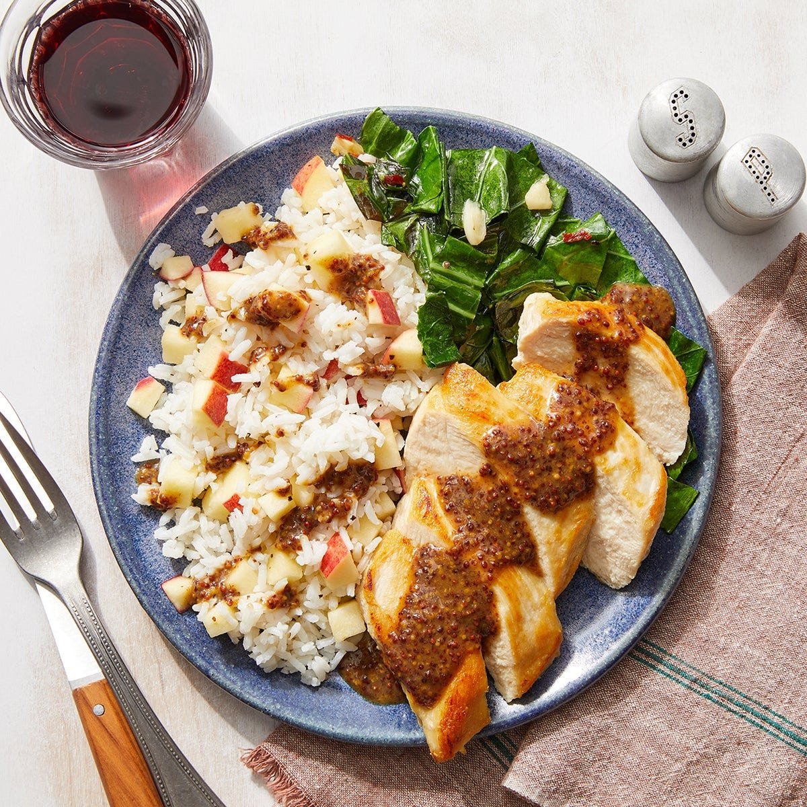

Chicken & Dijon Pan Sauce
with Spicy Collard Greens & Apple Rice

Description
Seared chicken with a side of sweet apple rice combined with an
irresistibly savory pan sauce made with whole grain dijon mustard, brown
sugar, soy sauce, and more.
It’s all complete with a hearty side of collard greens sautéed with punchy
garlic and a touch of crushed red pepper for a kick of heat.
Prep time: 40 minutes
2 servings
630 calories
Ingredients
- 2 Boneless, skinless chicken breasts
- ½ cup Jasmine rice
- 1 bunch Collard greens
- 1 Apple
- 2 cloves Garlic
- 1 Tbsp Light brown sugar
- 1 Tbsp Soy sauce
- 1 Tbsp Apple cider vinegar
- 2 Tbsp Whole grain dijon mustard
- 2 Tbsp Crème fraîche
- ¼ tsp Crushed red pepper flakes
Steps
- Prepare the ingredients and start the sauce:
- Wash and dry the fresh produce.
-
Separate the collard green leaves from the stems; discard the stems,
then roughly chop the leaves.
- Peel and roughly chop 2 cloves of garlic.
-
Core and small dice the apple. Place in a bowl; add
half the vinegar and season with salt and pepper.
Stir to combine. Set aside to marinate,
stirring occasionally.
-
In a separate bowl, combine the
soy sauce, mustard, sugar, remaining vinegar, and 1/4 cup of
water.
- Cook the rice:
-
In a small pot, combine the
rice, a big pinch of salt, and 1 cup of water.
- Heat to boiling on high. Once boiling, reduce the heat to low.
-
Cover and cook on low heat, without stirring,
12 to 14 minutes, or until the water has been
absorbed and the rice is tender.
- Turn off the heat and fluff with a fork. Cover to keep warm.
- Cook the collard greens:
-
In a medium pan, heat 1 teaspoon of olive oil on
medium-high until hot. Add the
chopped collard greens. Cook, stirring occasionally,
1 to 2 minutes, or until slightly wilted.
-
Add the chopped garlic; season with salt, pepper, and
as much of the red pepper flakes as you like. Cook, stirring
occasionally, 1 to 2 minutes, or until slightly
softened.
-
Add 1/4 cup of water. Cook, stirring occasionally,
2 to 3 minutes, until the collard greens are wilted
and the water has cooked off.
-
Transfer to a bowl. Taste, then season with salt and pepper if
desired. Cover with foil to keep warm.
- Wipe out the pan.
- Cook the chicken:
-
Pat the chicken dry with paper towels. In the same pan, heat
1 teaspoon of olive oil on medium-high until hot.
-
Add the chicken. Cook 6 to 7 minutes per side, or
until browned and cooked through.
-
Leaving any browned bits (or fond) in the pan, transfer to a plate.
- Finish the sauce:
-
To the pan of reserved fond, add the sauce made in
Step 1. Cook on medium-high, stirring frequently and scraping up any
fond, 2 to 3 minutes, or until slightly thickened.
-
Turn off the heat. Stir in the crème fraîche. Taste,
then season with salt and pepper if desired.
- Finish the rice & serve your dish:
-
To the pot of cooked rice, add the
marinated apple (including any liquid); season with
salt and pepper. Stir to combine.
-
Serve the cooked chicken with the finished rice and cooked collard
greens. Top the chicken and rice with the finished sauce. Enjoy!